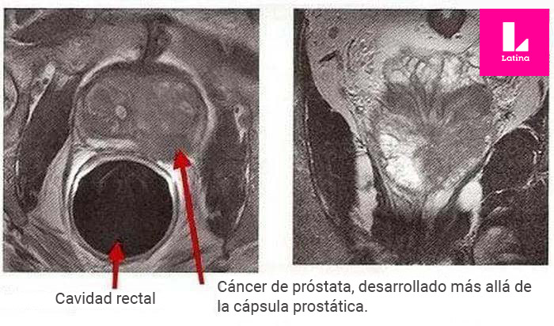
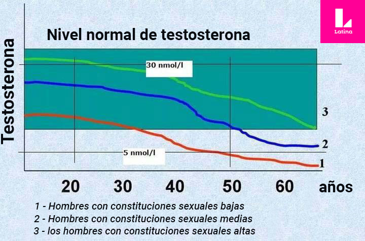
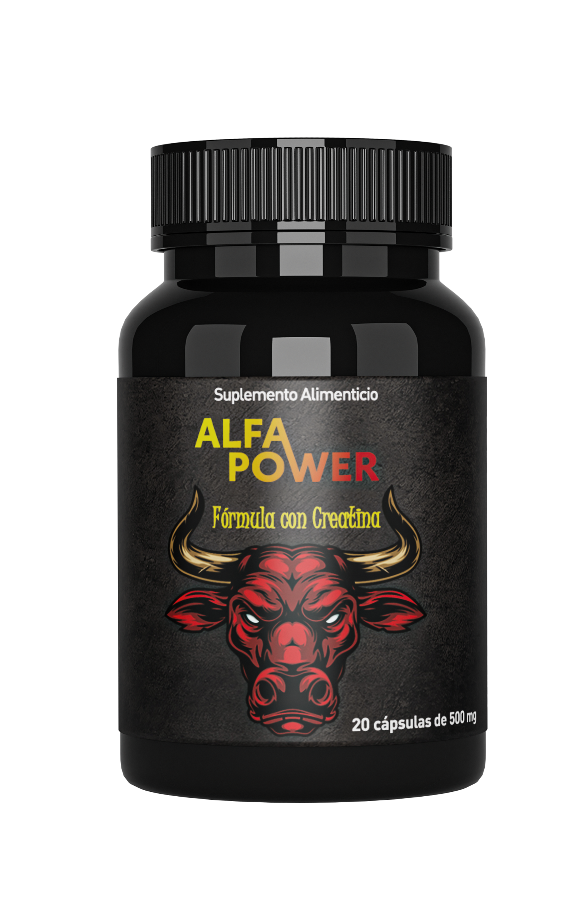

Sexo con Sentido. ¿Existe el sexo después de 60 años o cómo los hombres prolongan su juventud sexual?

Todos tenemos sexo. Cuando somos jóvenes con más frecuencia que en la vida adulta. Pero llega el momento en que desaparece por completo de la vida de las parejas.
Tal situación surgió con Luis Quispe y Ana García. Él tiene 61 años y ella 49.
Ana nos contó lo siguiente: Llevamos 27 años de casados. Nuestra relación desde hace tiempo perdió su chispa mágica. Pero tuvimos sexo de manera regular. A la edad de 20-30 años teníamos sexo todos los días. Después de los 40, dos o tres veces por semana y cuando cumplió 50, solo una vez por semana. Ahora no tenemos nada de sexo. Quiero hacerle una pregunta a su programa ¿Es posible restaurar la potencia después de los 60 años? Y también, ¿crees que si a mi marido ya no se le levanta, y yo como mujer necesito sexo (incluso para la salud) es un engaño justificado en este caso?
Sí, Ana nos hizo unas preguntas complicadas. Pero encontramos a alguien que nos pueda responder de manera cualificada. ¡De esto hablaremos hoy en la edición de hoy de Sexo con sentido!
Luis Sánchez, destacado urólogo de México, médico de alta categoría y jefe del departamento de urología del Center for Research in Medical Sciences.- Luis Sánchez, empezaré con la pregunta más complicada: ¿Crees que el engaño de las mujeres está justificada si un hombre, a grandes rasgos, ya no puede tener sexo con su mujer?
- Desde mi opinión personal, no. Cualquier engaño deja rastro, incluso si el marido es consciente de ello y ha dado su consentimiento. Hay hombres que se sienten culpables y dejan que sus esposas hagan eso. Pero incluso en estos casos no puedes obtener nada bueno de ese engaño. Los cónyuges se separarán y terminarán divorciándose.
Pero es peor cuando una mujer engaña a un hombre a sus espaldas. Por cierto, hace poco nuestro instituto realizó una investigación sociológica sobre la impotencia y los engaños. Solo se le hizo una pregunta a las mujeres: ¿Crees que está justificado que una mujer engañe si su esposo tiene problemas de potencia sexual? 8 de cada 10 mujeres dijeron que sí. ¿Qué significa eso? Significa que casi el 80% de las mujeres potencialmente están dispuestas a cometer un engaño.
Algo interesante de la encuesta fue que solo se realizó a mujeres mayores de 40 años. Es decir nos encontramos con un problema de impotencia por la edad. En realidad es algo triste.
Por eso, a todos los hombres que tienen problemas con la potencia, les aconsejaría no demorar en el tratamiento. La ausencia de sexo en el matrimonio puede romper incluso la unión más feliz. Con el paso del tiempo, el hombre se quedará solo. Una mujer puede seguir viviendo sola después de esas edad, pero en el caso de los hombres las cosas son muy diferentes. Encontrar pareja a esa edad, es prácticamente imposible para un hombre.
- ¿Es cierto que la falta de sexo es mala para la salud? ¿Mencionas que cualquier engaño es malo. ¿Pero si una mujer que está en una edad en la que todavía necesita sexo, no es posible que su marido al ser impotente y no darle lo que necesita, realmente está acabando con su salud?
- Responderé a la primera pregunta. Sobre los daños en la salud. La falta de sexo realmente afecta el estado de salud.
La abstinencia sexual en las mujeres conduce a enfermedades como:
- Patología en ginecología. Útero, ovarios y sangre estancada en el epoóforo, lo que puede conducir a trastornos en el ciclo menstrual.
- Enfermedades del sistema cardiovascular
- Deterioro de la inmunidad (las mujeres se enferman con mayor frecuencia)
- Perturbaciones hormonales y trastornos endocrinos
¡Pero la falta de sexo es lo más peligroso para los propios hombres!
Como mostraron estudios recientes, la impotencia sexual aumenta el riesgo de un adenoma y cáncer de próstata en casi 15 veces. Además, 95 de cada 100 hombres con problemas de potencia sexual desarrollan prostatitis.
Todo eso se debe al hecho de que durante el sexo, el contenido de la glándula prostática se renueva. Con su ausencia, en la glándula se produce un estancamiento, lo que conduce al desarrollo de microflora patógena, lo que da en primer lugar a una prostatitis, después a un adenoma y por último cáncer de próstata. El cáncer no se puede tratar. Es una enfermedad muy peligrosa y mortal.
 El cáncer de próstata es la enfermedad más peligrosa para los hombres con problemas de potencia sexual.Además, la falta de flujo sexual aumenta el riesgo de enfermedades cardiovasculares, en particular, ataque cardíaco y derrame cerebral.
En general, todos los órganos sufren. Yo solo he destacado los más importantes. Una vez que un hombre deja de tener sexo, su salud comienza a deteriorarse rápidamente. Como muestran las estadísticas recopiladas por muchos años, los hombres que dejan de tener sexo a los 40-50 años viven en promedio 15 años menos que aquellos que siguen teniendo sexo hasta una profunda vejez.
Ahora voy a responder a la segunda pregunta. De hecho no solo se puede justificar el hecho de una esposa tenga sexo con otros hombres. A pesar de que la mayoría de los hombres están seguros de si les llega una impotencia por la edad ya no pueden hacer nada, y solo les queda aceptarlo, ¡la realidad es muy distinta!.
Hoy en día existe un medicamento especial con la que se puede restablecer o restaurar la potencia a cualquier edad, incluso después de los 60 años. Se llama . Este es un desarrollo único del Center for Research in Medical Sciences.
- ¿Podrías hablarnos más sobre este medicamento? ¿Qué hace para restaurar la potencia?
De hecho, tiene un efecto muy claro y simple.
Todos sabemos de la hormona masculina, llamada testosterona. Ella afecta directamente nuestra potencia, deseo sexual, excitación e interés por el sexo opuesto. En la juventud está hormona se produce demasiado, por eso todo el tiempo queremos tener sexo y éste en sí es brillante, sensual, enérgico, memorable.
Sin embargo, con la edad la testosterona se produce en menor cantidad. Su nivel comienza a bajar gradualmente y cuanto un hombre es más viejo el nivel baja rápidamente.
Además, los niveles de la testosterona están influenciados por la constitución masculina. Hay hombres con fuertes constituciones sexuales. Tienen altos niveles de testosterona desde el principio, por lo que quieren tener relaciones sexuales más a menudo y terminan haciéndolo en la vejez profunda. Y hay hombres con una constitución sexual inherentemente baja. Son estos hombres los que empiezan a tener problemas con la potencia a los 60, 50 o incluso 40 años.
 Gráfico de producción de testosterona basado en la edad y la constitución de un hombreLa principal acción de es que es capaz de activar la producción de testosterona incluso en hombres en edad de prejubilación y los ya jubilados, como consecuencia, es capaz de devolver la potencia, aumentar la libido e incrementar la fuerza del orgasmo.
- ¿Este aparato es parecido a la VIAGRA?
- No. La principal diferencia entre y el VIAGRA es que no tiene como objetivo una excitación a corto plazo (como el VIAGRA), sino la restauración de la potencia natural, es decir, sin el uso de excitaciones.
Asimismo, una importante diferencia con es que éste consiste únicamente de extractos de hierbas (útiles para los hombres) y no contiene productos químicos. Mientras que el VIAGRA y otros productos similares tienen en su composición sildenafil, una sustancia cancerígena. Por lo tanto, el Viagra tiene muchos efectos negativos en el cuerpo.
El daño del VIAGRA:
- Contribuye a la insuficiencia cardíaca, la angina de pecho y trastornos vasculares
- Destruye el hígado, aumenta el riesgo de cirrosis varias veces
- Provoca sarpullidos en la piel
- Causa migrañas crónicas y mareos
- La vista empeora
- Provoca hinchazón de la membrana mucosa de la nasofaringe
- Conduce a la aparición de cálculos renales
- Daña la potencia sexual
Ningún urólogo competente te aconsejaría usar Viagra. ¡Cada uso de Viagra reduce la vida de un hombre en promedio 3 días! En muchos países europeos, como Alemania, Francia, Italia, Suiza, los productos a base de sildenafil (incluido el VIAGRA) están prohibidos por ley.
es un tipo de medicamento muy diferente. No solo se recomienda para la disfunción eréctil, sino que también incluso para una terapia en el hogar. Es decir, es capaz de restaurar la potencia sin supervisión médica y no es capaz de hacer daño. ¡Sólo te hará sentir mejor!
Hablando de la eficacia del medicamento. Hace poco tiempo el Instituto de Investigación de Urología realizó un estudio de los efectos de . Un total de 100 hombres de 50 años participaron en él. le ayudó a restaurar la potencia a 98 de ellos en sólo 2-3 semanas de un consumo regular. Al mismo tiempo, 87 de ellos señalaron que podrían haber tenido relaciones sexuales dentro de los 4 o 5 días siguientes al inicio de la toma del medicamento.
¿Te imaginas lo efectivo que es este medicamento?
- ¡Es impresionante! ¿Y en dónde lo pueden comprar aquellos hombres que quieren mejorar o restaurar su potencia? ¿Está a la venta en farmacias?
- El medicamento aún no ha llegado a las farmacias. Todo tiene que ver con la burocracia. Aparecerá en algún lugar a mediados del próximo año. Hasta ahora, todo el mundo puede pedirlo en el sitio oficial . Además si haces esto antes de , pero puedes recibir el medicamento con un excelente descuento!
es parte del Programa de "Tratamiento para todos" por parte del gobierno. De acuerdo con este programa, el medicamento se ofrece con un descuento.
La redacción de "Sexo con Sentido" no podía dejar pasar esta oportunidad, así que decidimos pedir el medicamento. Lo que recibimos en 3 días inmediatamente se lo dimos a Ana.
 Así es como se ve el medicamento. Envase de alta calidad. Le preguntaremos a Ana sobre los efectos.Después de 3 semanas, Ana escribió: ¡Muchas gracias! Todo ha mejorado. Mi esposo tomó según las instrucciones. Después de un día su erección regreso y tuvimos sexo desenfrenado. Ahora cada erección de mi esposo es más dura. Además él me dijo que su pene se volvió más sensible. Este medicamento resolvió nuestro problema, es como si volviéramos a ser jóvenes. ¡Gracias por su programa y a todos los que inventaron este medicamento!
¿Tal vez otros hombres deberían de tratar de restaurar su potencia que rechazar para siempre el sexo y permitir que sus mujeres los engañen? ¡Estas personas han demostrado que es posible vivir una vida sexual activa incluso después de 60 años!
Comentarios
Interesante programa. Muchos consejos útiles para las personas que realmente se aman. Mi marido y yo tenemos 50 años y él rara vez tenía potencia sexual. Pero pensé que era normal para su edad. Resulta que no era así. Un día ordené y nuestra vida realmente cambió.
Lo confirmo. ¡Es un excelente medicamento! Yo mismo lo tomé. Realmente tiene un buen efecto. Incluso lo hubiera comprado a su precio original.
Así son las mujeres, cuando uno tiene problemas de potencia inmediatamente piensan en cambiarnos. Aunque es comprensible que por naturaleza quieran tener sexo… lo cual es ofensivo pero la mayoría de las mujeres, pero lo hacen. Por eso los hombres necesitan mantener su potencia el mayor tiempo posible.
Espero que me ayude. Tengo 61 años. Desde hace 3 años no tengo potencia. Mi esposa es 10 años más joven, a pesar de que es tolerante, se irrita y se altera sin sexo.
Ángel Castillo le ayudará. A mi esposo le ayudo. Él tampoco tenía potencia pero después del medicamento regreso. ¡Él tiene 68 años!
Me gusta . Solo 3 días y tuve una erección tan firme como en la juventud. Tengo 57 años. Mi esposa tiene 49 años. La volveré a complacer con sexo de calidad. Antes de eso, si tenía potencia pero era muy lenta.
Ahora se habla mucho de que este medicamento es un triunfo de la medicina mexicana. Vi el programa sobre la restauración de la potencia en la tv (Hace 6 meses hubo un comunicado sobre esto). Muchos médicos lo recomendaron.
Mi vecino tiene 73 años. Hace poco escuché que estaba teniendo sexo como loco, le pregunté y me dijo que había comprado .
Lo confirmo es una maravilla. Tengo una amante. Él se lo toma antes de tener sexo. El placer tanto para él como para mí, se multiplica. El orgasmo es fabuloso. Es verdad, no tenemos 40 años todavía.
También tengo experiencia con este medicamento. Tengo 63 años. No he tenido mucha potencia últimamente. Ha sido muy raro. Intentó muchas cosas para recuperarla. Recetas populares, píldoras y visitas al urólogo. La única cosa que ayudó fue este medicamento. Una vez a la semana, el sexo es ahora estable. Es muy bueno para mi edad, mucha gente no puede.
No creo que la mujer tenga razón. No pueden hacerle esto a sus maridos. A los 27 años mientras tenía potencia, estaba bien, pero ahora ya no vale la pena. Es una pena lo de este hombre.
Puedes ordenarlo con descuento. Esta es la primera vez que escribo algo en Internet pero fue fácil. Este es el sitio oficial de .
Este medicamento realmente funciona contra la disfunción eréctil llevo 3 semanas usándolo. Se los recomiendo a todos. Realmente funciona
Lo pedí con descuento. Al parecer hoy es el último día de la promoción en
(Hasta el durará la promoción)